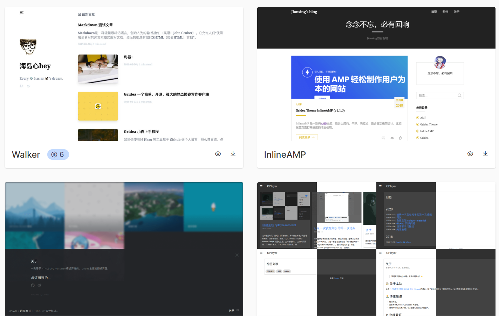

Gridea
Gridea主题食用方法
我们知道这是个非常傻瓜式的静态网站部署软件，但是由于起步初期，用户较少，相关的教程还不够全面。 这里讲解一下主题的使用方法。 首先，我们要设置Gridea的存储目录（ 默认是空白的，不知道存哪里了 ） 点击最左下角设置图标，进入设置界面：…
では、ゲームを始めましょう
GO FOR IT !

我们知道这是个非常傻瓜式的静态网站部署软件，但是由于起步初期，用户较少，相关的教程还不够全面。 这里讲解一下主题的使用方法。 首先，我们要设置Gridea的存储目录（ 默认是空白的，不知道存哪里了 ） 点击最左下角设置图标，进入设置界面：…
前排提示，此问题如若不重视，可能导致手机无限重启 前言：此问题并非所有人都会遇到，因系统版本和使用cmd或powershell而异 判断是否有问题的方式： 使用adb进行pull，pull取任意应用（例如：adb pull /syste…

进入洛谷页面查看 『 』镇楼 gameは始める！ 随机图 （刷新试试 - - - - - - AC：Accept，程序通过。 CE：Compile Error，编译错误。 PC：Partially Correct，部分正确。 WA：Wron…

K个城市已经被僵尸控制了，如果贸然闯入就会被感染TAT...所以不能进入！！！ 首先，注意几个细节！ 如上方大字，不能进入被控制的城市（qwq） dis距离开 long long ，最大值也要开的足够大！（数据超int了） 将点值附在边权上…
然而我是用map的 首先，根据题意打暴力就行 然后有几个 细节要注意 ： 开 long long ！！！ 本来是sort 从大到小 或 从小到大都可以， 然而 从大到小 的话，就要用 s[i]*k ，这样会爆long long（开__int…
这题就非常有意思了 首先，这是一道floyed妙用题 我们要对 floyed 进行简单的 修改 先看下题意，要我们求 青蛙距离 简单讲就是 更小的跳跃距离 ，无视总路程 那么我们知道floyed是求 最短路径 的算法，并且是 动态规划 思想…